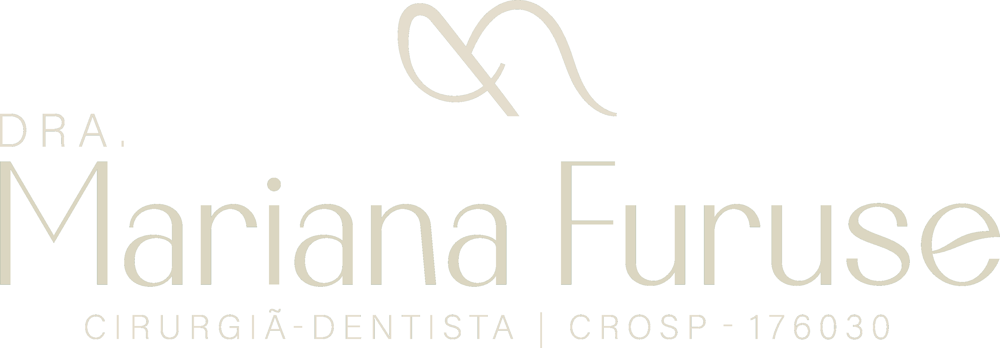
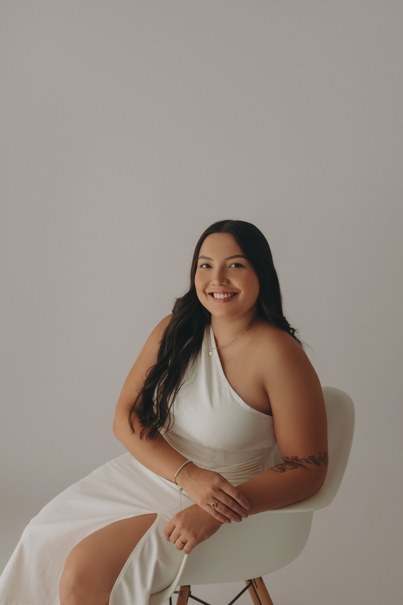
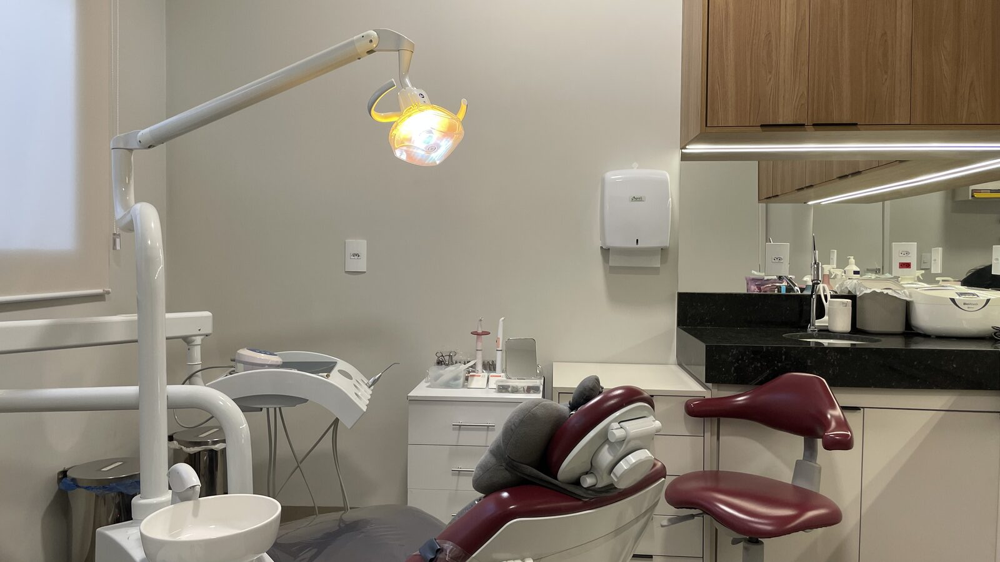
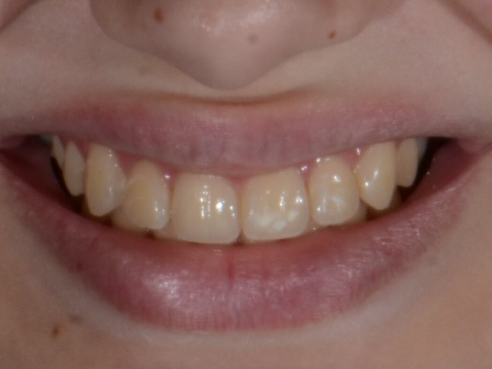
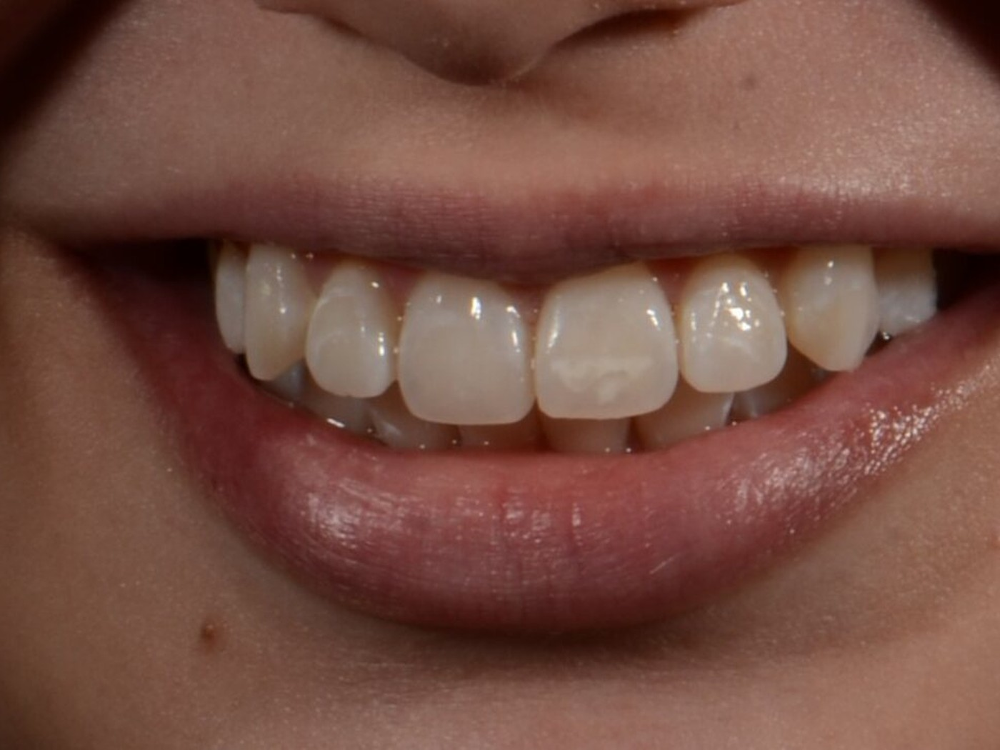
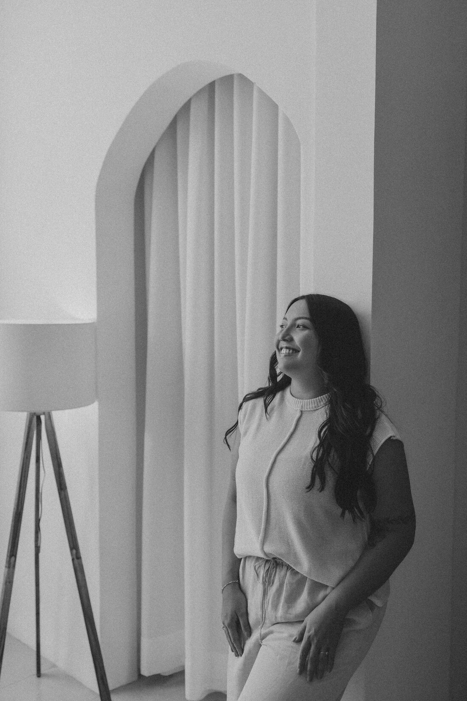
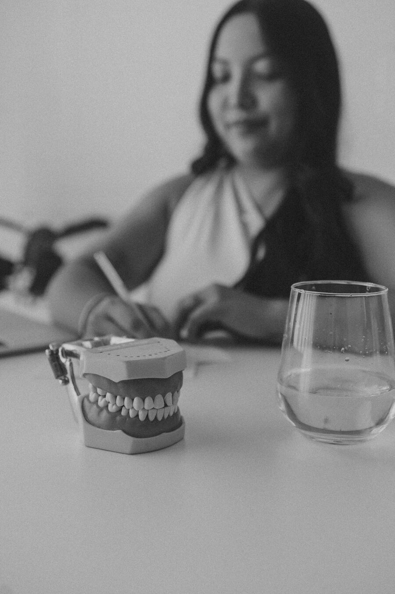
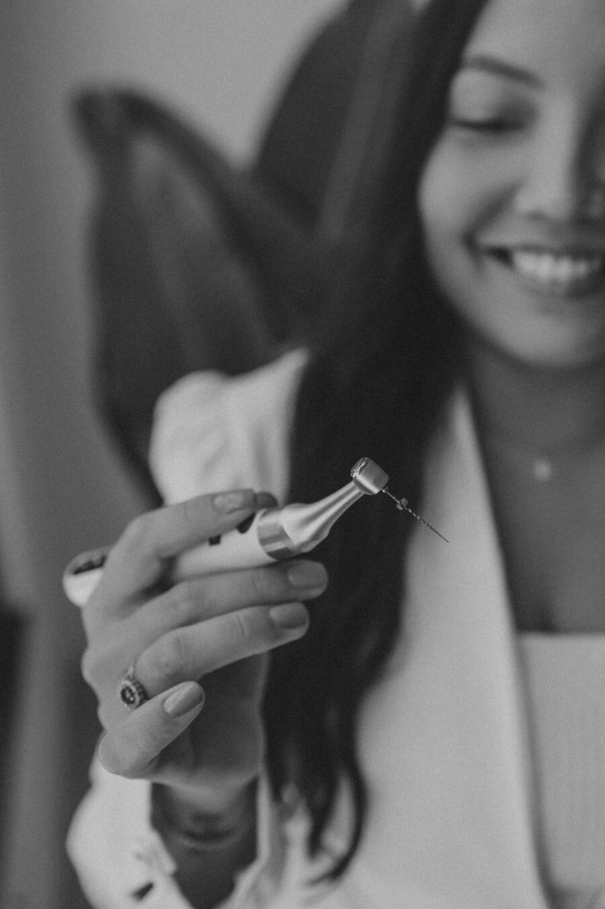

Dra. Mariana Furuse — Cirurgiã-Dentista em Araçatuba, SP. CROSP 176030

Odontologia com calma, escuta e atenção aos detalhes, pensando na saúde e na longevidade do seu sorriso.

Primeira consultaR$ 125, abatidos do tratamento feito em até 15 dias
UrgênciasRaio X digital na própria clínica
AtendimentoSegunda a sábado, com horário marcado
Primeira consulta
Como funciona a sua primeira consulta
Na primeira consulta, é realizado um exame clínico completo e individualizado da sua saúde bucal. É feita a avaliação criteriosa da sua queixa principal, identificação das causas e elaboração de um plano de tratamento personalizado com clareza e transparência.
Exames anteriores podem ser apresentados para análise diagnóstica. Havendo urgência odontológica, a clínica dispõe de tecnologia de Raio X digital instantâneo. Para aprimoramento da higiene diária, o paciente também pode trazer sua escova de dentes para orientações personalizadas de escovação.
Valor da consulta
R$ 125
100% abatido ao realizar qualquer tratamento na clínica em até 15 dias após a consulta.
- —Traga seus exames prévios, se tiver
- —Traga sua escova de dentes para orientações de escovação
- —Raio X digital na própria clínica

Na clínica
Tecnologia e conforto
- Raio X digital
- Imagens radiográficas instantâneas no computador, sem tempo de espera, para um diagnóstico rápido e seguro.
- Escaneamento digital
- Mapeamento tridimensional da boca com precisão, sem as moldagens desconfortáveis tradicionais.
- Cadeira com massagem
- Esteira de massagem integrada à cadeira odontológica, para um atendimento mais relaxante.
Tratamentos e casos
Resultados de pacientes da clínica
Arraste o divisor sobre a foto para comparar o antes e o depois. Fotos reais de pacientes da clínica, cedidas para fins ilustrativos.


Antes DepoisClareamento dental supervisionado
Resultados podem variar de paciente para paciente.
Passo a passo
Do primeiro contato ao acompanhamento
-
01
Contato pelo WhatsApp
Fale direto com a equipe e escolha o horário que combina com a sua rotina.
-
02
Primeira consulta
Exame completo e individualizado. Analisamos sua queixa principal e seus exames prévios, e tiramos suas dúvidas.
Solicitação de exames, se necessário.
R$ 125, abatidos em até 15 dias
-
03
Planejamento
O plano de tratamento é apresentado com calma e clareza, sem pressa e sem procedimentos desnecessários.
-
04
Tratamento
Sessões na cadeira com esteira de massagem, com Raio X digital e escaneamento quando indicados.
-
05
Acompanhamento
Orientações de higiene e retornos preventivos para manter a saúde dos dentes ao longo do tempo.

Sobre a Dra. Mariana
“Atenção aos detalhes, cuidado e acolhimento em primeiro lugar. Com profunda empatia por cada paciente, busco resolver suas necessidades através de um planejamento preciso e personalizado. Acima de tudo, só ofereço e proponho o tratamento que eu estaria disposta a realizar em mim mesma se estivesse no seu lugar.”
Dra. Mariana Furuse
A Dra. Mariana Furuse atua em Araçatuba – SP com uma odontologia leve, humana e voltada para a saúde e o bem-estar do paciente. O foco é oferecer o melhor planejamento possível, priorizando a prevenção, o alívio de dores, a longevidade e a estética natural do sorriso.


Formação
Formação e cursos
-
Cirurgiã-Dentista
Formada pela Faculdade de Odontologia de Araçatuba (FOA UNESP).
-
Atualização em Endodontia
Aperfeiçoamento em Tratamento de Canal pelo INSPE CURSOS, com a Profª Juliana Quitino Trizzi.
-
DTM, Bruxismo e Placas Oclusais
Imersão em Fluxo Clínico de DTM e Placas de Bruxismo com o Profº Paulo Conti (FOB USP Bauru).
-
Protetor Bucal Esportivo
Capacitação teórico-prática na confecção artesanal sob medida com o Profº Eli Namba (Sports Dental).
-
Comunidade Dentista PRO
Membro da comunidade do Profº Paulo Vinícius Soares.
Depoimentos
O que dizem os pacientes
“Excelente profissional! A Mari é muito atenciosa, cuidadosa e transmite muita segurança. Atendimento impecável desde a recepção até o procedimento. Me senti super bem acolhida e o resultado ficou maravilhoso. Recomendo de olhos fechados!”
“Super atenciosa, detalhista, e excelente profissional que indico desde uma avaliação geral até procedimentos mais complexos.”
“Atendimento nota 10! A Dra. Mariana é extremamente atenciosa, cuidadosa e muito profissional. Dá para perceber o quanto ela ama o que faz e preza pela excelência.”
“Ótima profissional! Meu tratamento para bruxismo trouxe uma grande melhora na minha qualidade de vida. Muito atenciosa, competente e clara nas explicações.”
Dúvidas
Perguntas frequentes
Não encontrou sua dúvida? Fale com a equipe pelo WhatsApp
Contato
Agende sua consulta
Preencha os dados e a mensagem já abre pronta no WhatsApp da clínica.
- Horário
- Segunda a sábado, com agendamento prévio
- (18) 99600-1588
- @marianafuruse